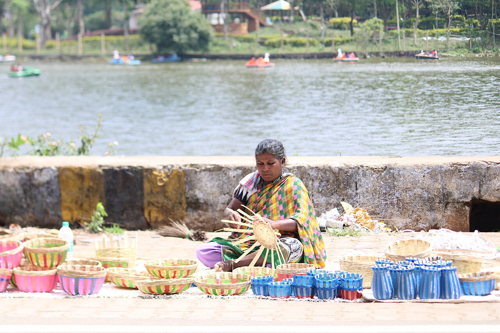
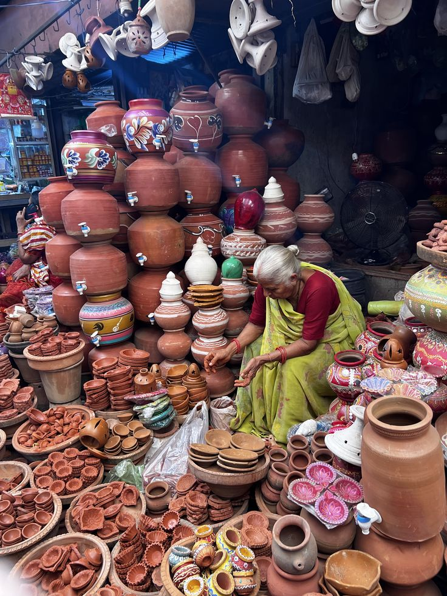
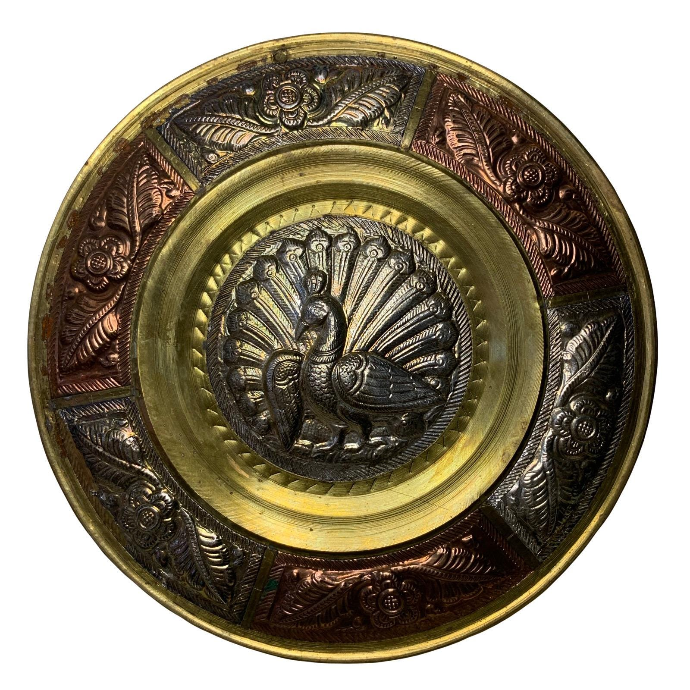
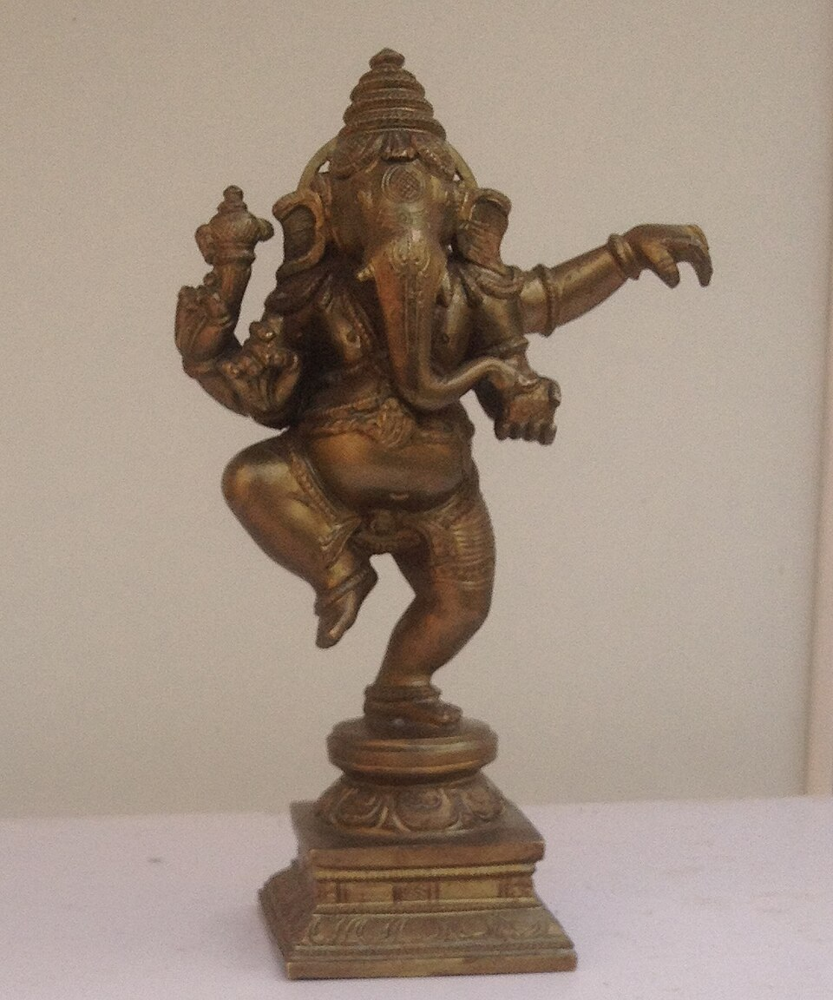

Mamallapuram Stone Carving
Mamallapuram Stone CarvingTN ARTISAN · Independent Tamil Nadu marketplace
Handmade, with a story in every detail.
Browse pottery, painting, metalwork, carving and woven goods from across the state.
All productsThanjavur PaintingsThanjavur Art PlatesSwamimalai BronzeNachiarkoil Brass LampsKalamkari & TextilesMamallapuram Stone CarvingTamil Nadu Wood CarvingClay & PotteryPalm Leaf & Jute
Mamallapuram Stone Carving Mamallapuram Stone Carving
Mamallapuram Stone Carving Mamallapuram Stone Carving
Mamallapuram Stone CarvingMamallapuram35 × 50 × 5 cm (approx.)
Makara Border Stone Plaque
₹11,200Granite or soft stone; confirm with maker
 Mamallapuram Stone Carving
Mamallapuram Stone CarvingMamallapuram18 × 12 × 10 cm (approx.)
Nandi Stone Desk Sculpture
₹6,200Granite or soapstone; confirm with maker
 Mamallapuram Stone Carving
Mamallapuram Stone Carving Tamil Nadu Wood Carving
Tamil Nadu Wood CarvingKallakurichi26 × 16 × 12 cm (approx.)
Small Dancing Ganesha Wood Sculpture
₹5,100Hardwood; species to confirm
 Tamil Nadu Wood Carving
Tamil Nadu Wood Carving Tamil Nadu Wood Carving
Tamil Nadu Wood Carving Tamil Nadu Wood Carving
Tamil Nadu Wood Carving Tamil Nadu Wood Carving
Tamil Nadu Wood CarvingKallakurichi45 × 60 × 5 cm (approx.)
Kallakurichi Carved Temple Door Panel
₹8,900Seasoned hardwood; species to confirm
 Palm Leaf & Jute
Palm Leaf & Jute Palm Leaf & Jute
Palm Leaf & JuteTamil Nadu30 × 22 × 16 cm (approx.)
Jute-and-Olai Gift Hamper Basket
₹1,380Palm leaf, jute cord and cotton wrap
 Palm Leaf & Jute
Palm Leaf & Jute Palm Leaf & Jute
Palm Leaf & Jute Palm Leaf & Jute
Palm Leaf & Jute Palm Leaf & Jute
Palm Leaf & Jute Kalamkari & Textiles
Kalamkari & TextilesKanchipuram110 × 150 cm (approx.)
Handloom Silk Border Table Cloth
₹5,200Silk-cotton blend; confirm exact fibre
 Kalamkari & Textiles
Kalamkari & TextilesKumbakonam region70 × 110 cm (approx.)
Kalamkari Wall Hanging with Tree Motif
₹4,300Cotton cloth and textile dyes
 Kalamkari & Textiles
Kalamkari & Textiles Kalamkari & Textiles
Kalamkari & Textiles Kalamkari & Textiles
Kalamkari & Textiles Kalamkari & Textiles
Kalamkari & Textiles Kalamkari & Textiles
Kalamkari & TextilesKumbakonam region60 × 90 cm (approx.)
Kalamkari Epic-Scene Textile Panel
₹5,600Cotton cloth and natural or mineral dyes
 Clay & Pottery
Clay & Pottery Clay & Pottery
Clay & Pottery Clay & Pottery
Clay & Pottery Clay & Pottery
Clay & Pottery Clay & Pottery
Clay & Pottery Clay & Pottery
Clay & PotteryTamil Nadu20 × 18 × 18 cm (approx.)
Hand-Painted Terracotta Planter
₹980Terracotta clay and water-based paint
 Clay & Pottery
Clay & PotteryMadurai region32 × 22 × 22 cm (approx.)
Painted Red-Clay Storage Jar
₹2,250Terracotta clay and mineral colour
 Clay & Pottery
Clay & Pottery Nachiarkoil Brass Lamps
Nachiarkoil Brass Lamps Nachiarkoil Brass Lamps
Nachiarkoil Brass Lamps Nachiarkoil Brass Lamps
Nachiarkoil Brass Lamps Nachiarkoil Brass Lamps
Nachiarkoil Brass Lamps Swamimalai Bronze
Swamimalai BronzeTamil Nadu20 × 12 × 10 cm (approx.)
Temple Bell and Stand Set
₹5,300Brass or bronze alloy; confirm with maker
 Nachiarkoil Brass Lamps
Nachiarkoil Brass Lamps Swamimalai Bronze
Swamimalai BronzeThanjavur region16 × 12 × 9 cm (approx.)
Shiva and Parvati on Nandi Sculpture
₹7,400Metal alloy; exact composition to be confirmed
 Swamimalai Bronze
Swamimalai BronzeSwamimalai26 × 15 × 11 cm (approx.)
Standing Shiva and Parvati Metal Ensemble
₹12,400Metal alloy; exact composition to be confirmed
 Swamimalai Bronze
Swamimalai BronzeSwamimalai style18 × 11 × 7 cm (approx.)
Small Nataraja Desk Icon
₹6,200Brass or bronze alloy; confirm with maker
 Swamimalai Bronze
Swamimalai BronzeSwamimalai style24 × 12 × 8 cm (approx.)
Flute-Playing Krishna Metal Sculpture
₹9,800Brass or bronze alloy; confirm with maker
 Thanjavur Paintings
Thanjavur PaintingsThanjavur30 × 40 × 3 cm (approx.)
Krishna with Flute Devotional Panel
₹9,900Wood, gesso, pigments and foil
 Swamimalai Bronze
Swamimalai BronzeSwamimalai30 × 18 × 10 cm (approx.)
Swamimalai Inspired Dancing Nataraja
₹16,800Panchaloha-style metal alloy; composition to confirm
 Thanjavur Paintings
Thanjavur PaintingsThanjavur40 × 50 × 5 cm (approx.)
Peacock Arch Tanjore Wall Art
₹14,600Wood board, gesso, pigments and gold-tone foil
 Thanjavur Paintings
Thanjavur PaintingsThanjavur32 × 42 × 4 cm (approx.)
Lotus Ganesha Gold-Detail Panel
₹11,200Wood, chalk gesso, foil and natural pigments
 Thanjavur Paintings
Thanjavur PaintingsThanjavur35 × 45 × 4 cm (approx.)
Kamadhenu Raised-Relief Art Panel
₹12,800Wood board, gesso, foil and pigments
 Swamimalai Bronze
Swamimalai BronzeSwamimalai style22 × 16 × 9 cm (approx.)
Veena Goddess Metal Icon
₹4,800Metal alloy; exact composition to be confirmed
 Thanjavur Paintings
Thanjavur PaintingsThanjavur30 × 40 × 3 cm (approx.)
Brush-Worked Thanjavur Devotional Study
₹9,200Wood board, gesso, pigments and foil
 Thanjavur Paintings
Thanjavur PaintingsThanjavur75 × 95 × 6 cm (approx.)
Seated Divine Family Tanjore Artwork
₹26,500Wood panel, chalk gesso, pigments and gold-tone foil
 Thanjavur Paintings
Thanjavur PaintingsThanjavur45 cm diameter × 4 cm depth (approx.)
Oval Shiva-Parvati Thanjavur Panel
₹18,500Wood board, gesso, gold-tone foil and pigments

Palm Leaf & Jute Tamil Nadu Wood Carving
Tamil Nadu Wood Carving
Clay & Pottery Mamallapuram Stone Carving
Mamallapuram Stone Carving
Thanjavur Art Plates Nachiarkoil Brass Lamps
Nachiarkoil Brass Lamps
Swamimalai Bronze Thanjavur Paintings
Thanjavur PaintingsThanjavurApproximate size; confirm with maker
Lakshmi Thanjavur Painting
₹4,200Wood panel, gesso and gold-tone foil
Made with care · built for makers
Make room for handmade.
Tell the story behind your craft and bring your work to people who value it.
கைவினைTHE HANDS BEHIND THE OBJECT